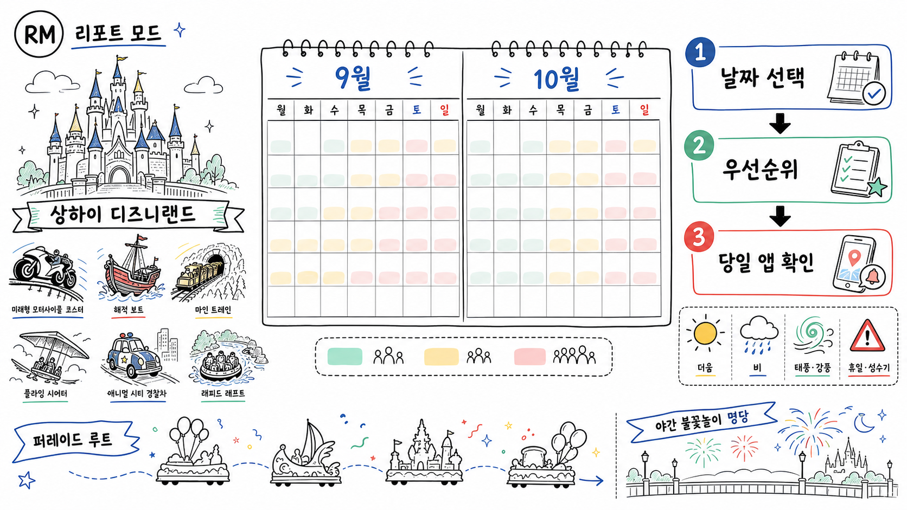

변동 정보
파크 운영시간, 어트랙션 휴지, 얼리 엔트리, 공연 시간, 호텔 요금은 날짜별로 바뀝니다.
기존 보고서를 보존하면서 최신 공식 자료, 실제 적용 예시, 미디어, 출처, 변경 이력을 공통 ReportMode 형식으로 보강했습니다.
파크 운영시간, 어트랙션 휴지, 얼리 엔트리, 공연 시간, 호텔 요금은 날짜별로 바뀝니다.
공식 앱의 실시간 대기시간·지도·예약을 기준으로 오전 핵심 2개, 오후 유연 구간, 야간 쇼 대안을 구성했습니다.
아이 키·낮잠·식사·귀가 기준을 먼저 정하고, 인기 어트랙션보다 회복 가능한 일정을 우선하세요.

01날짜 9/21–24 또는 10/12–16·19–23 평일 우선
02회피 10/1–7 국경절 · 9/25–27 중추절도 피하기
03동선 Zootopia → Pirates → TRON 야간 완성
사람이 적은 날과 좋은 여행일은 같지 않습니다. 9월은 대기 신호가 가장 낮지만 태풍·고온이 퍼레이드와 실외 체험을 흔들 수 있고, 10월은 국경절 이후가 날씨와 동선의 균형점입니다. 공식 운영 정보와 민간 대기 데이터를 분리해 판단했습니다.

혼잡 2/5 · 장기 crowd 35%
평일은 유리하지만 고온·소나기·태풍이 야외쇼를 흔듭니다.
혼잡 3/5 · 장기 crowd 42%
국경절 첫 주만 분리하면 날씨와 동선 균형이 좋아집니다.
이미지는 저장소 내부 파일로 제공해 깨짐을 줄였고, 영상은 기존 보고서의 검증된 링크가 있을 때만 클릭 로드합니다.
메인 도서관 썸네일과 본문이 같은 로컬 자산을 사용합니다.
검증되지 않은 영상을 임의로 넣지 않고, 공식 원문·데모 페이지를 바로 열 수 있게 구성했습니다.
보고서의 추천은 작은 범위에서 검증한 뒤 확대하고, 중요한 판단은 원문과 사람 검토를 거칩니다.

퍼레이드: 약 20분 전 실용 기준
ILLUMINATE: 정면이면 90분 전 보수안
9월 최저 혼잡 신호와 10월 중순의 좋은 날씨 사이에서 선택합니다.
과거 대기 신호와 2026 달력 구조를 결합한 상대 추천입니다. 9월은 태풍 예보, 10월은 시즌 행사 공지를 별도로 확인해야 합니다. [Shanghai Disney Resort wait-time statistics]
중추절과 국경절 대형 이동 수요 구간입니다. 2026 공식 공휴일 원문 URL을 안정적으로 회수하지 못했으므로 예약 전 국무원 공고를 재대조하세요.
Soaring/Roaring은 실제 대기가 긴 1개만 선택하고, DPA는 늦은 입장·연휴·아이 동반일 때 개별 구매를 우선합니다. [Shanghai Disneyland Trip Planning Guide]
월평균 하나로 뭉치지 않고 연휴·평일·날씨·시즌 행사를 분리했습니다.
| 구간 | 조건 | 혼잡 | 리스크 | 판단 |
|---|---|---|---|---|
| 9/1–3 | 화–목·학기 초 | 2/5 | 더위·습도, 야외쇼 고온 조정 가능 | 혼잡 우선이면 추천 |
| 9/4–6 | 금–일 | 3/5 | 더위·소나기 | 가능하면 평일로 이동 |
| 9/7–10 | 월–목 | 1–2/5 | 태풍 예보 확인 | 1순위 |
| 9/11–13 | 금–일 | 3/5 | 습도·소나기 | 차선 |
| 9/14–17 | 월–목 | 1–2/5 | 태풍 감시 최우선 | 예보 안정 시 1순위 |
| 9/18–20 | 금–일 | 3/5 | 비·바람 가능 | 차선 |
| 9/21–24 | 월–목·연휴 직전 | 1–2/5 | 기온 완화 | 혼잡·날씨 균형 최상 |
| 9/25–27 | 중추절 연휴 | 5/5 | 국내 가족 수요 | 회피 |
| 9/28–30 | 연휴 사이·황금연휴 직전 | 3/5 | 선행 이동 수요 | 가능하나 열세 |
9월 기후 평년: 평균 24°C, 최고/최저 27/21°C, 강수 약 152mm·13일. 특정 날짜 예보가 아니며 태풍은 방문 7–10일 전 재평가합니다. [Shanghai Weather in September 2026]
| 구간 | 조건 | 혼잡 | 리스크 | 판단 |
|---|---|---|---|---|
| 10/1–4 | 국경절 초반 | 5/5 | 연중 최상위 혼잡권 | 강한 회피 |
| 10/5–7 | 국경절 후반 | 4–5/5 | 여전히 대형 연휴 | 불가피할 때만 |
| 10/8 | 연휴 직후 목요일 | 2/5 | 온화 | 매우 좋은 단일 날짜 |
| 10/9–11 | 금–일 | 3/5 | 대체근무일 변수 | 일요일보다 평일 우선 |
| 10/12–16 | 월–금 | 2/5 | 온화 | 10월 1순위 |
| 10/17–18 | 주말 | 3/5 | 기후 좋음 | 주말 프리미엄 |
| 10/19–23 | 월–금 | 2/5 | 일교차 확대 | 10월 1순위 |
| 10/24–25 | 주말 | 3/5 | 할로윈 공지 변수 | 가능하면 회피 |
| 10/26–30 | 평일 | 2–3/5 | 할로윈/가을 행사 변수 | 공식 일정 확인 후 조건부 |
| 10/31 | 토요일 | 4/5 | 할로윈 당일 수요 가능 | 회피 |
10월 기후 평년: 평균 19°C, 최고/최저 22/15°C, 강수 약 58mm·12일. 초순 황금연휴를 피하면 체감이 좋아지지만, Halloween 일정은 공식 공지 전 확정하지 않습니다. [Shanghai Weather in October 2026]
| 월 | 상대 등급 | 장기 crowd level | 해석 |
|---|---|---|---|
| 1월 | 3/5 | 45% | 춘절이 걸리면 급등. 휴일 전후를 분리. |
| 2월 | 4/5 | 51% | 춘절·가족 여행 수요. |
| 3월 | 2/5 | 39% | 공휴일 전 화–목이 유리. |
| 4월 | 4/5 | 66% | 청명절·봄 여행 수요. |
| 5월 | 4/5 | 60% | 노동절 연휴가 평균을 끌어올림. |
| 6월 | 5/5 | 67% | 장기 최고권. 단오·장마·시즌 수요. |
| 7월 | 4/5 | 58% | 여름방학·고온. |
| 8월 | 4/5 | 61% | 여름방학·폭염. |
| 9월 | 2/5 | 35% | 장기 최저권. 단 9/25–27은 회피. |
| 10월 | 3/5 | 42% | 10/1–7은 5/5, 이후 평일은 크게 완화. |
| 11월 | 2/5 | 39% | 공휴일 적고 기후 양호. |
| 12월 | 2/5 | 36% | 초·중순 평일 유리, 연말 주말 상승. |
Crowd level은 Queue-Times의 민간 대기 기반 지표이며 입장객 수가 아닙니다. 장기 평균은 시설 추가·운휴·팬데믹·수집 방식 영향을 받으므로 월내 공휴일을 먼저 분리해 읽어야 합니다. [Shanghai Disney Resort wait-time statistics]
모든 것을 타려 하지 말고 독점 헤드라이너·실내 백업·쇼의 자리 비용을 함께 봅니다.
DPA는 실제 최장 대기 1개만. 야간쇼 정면을 택하면 저대기 라이드 기회를 포기하는 구조입니다.
Roaring·Mine Train·TRON은 아이의 키와 당일 기상·컨디션을 확인한 뒤 선택합니다.
1일차: Zootopia·Pirates·TRON 등 독점 라이드.
2일차: Soaring·Roaring·Camp Discovery·Fantasyland·퍼레이드·야간쇼.
더 나쁜 날씨의 날을 실내/공연일로 전환하고 PA는 첫날 실대기 후 판단합니다.
공식 앱에서 확인되지 않은 시간표와 상품은 확정 정보로 취급하지 마세요. [Park Hours / Show Time]
공식 33개 카드 중 Zootopia Entrance/Exit 이동 포털 2개를 제외했습니다. 공식 페이지가 공통 체험시간(분)을 공개하지 않아 허위 평균을 만들지 않았습니다. [Attractions 공식 목록(영문)]
| 어트랙션·랜드 | 유형 | 신장 | 환경·주의 | DPA | 우선 | 실행 판단 |
|---|---|---|---|---|---|---|
| Zootopia: Hot PursuitZootopia | 다크 라이드 | 81cm+ | 실내 · 어두움/소형 낙하 | Y | 개장 직후 1순위. 최신 랜드 수요가 집중되므로 실제 대기가 길면 개별 DPA 후보. | |
| Seven Dwarfs Mine TrainFantasyland | 가족 코스터 | 97cm+ | 실외 · 큰 낙하 | Y | 첫 경험자는 가치가 높지만 짧고 실외. 긴 줄이면 야간 또는 생략. | |
| Soaring Over the HorizonAdventure Isle | 비행 시뮬레이터 | 102cm+ | 실내 · 고소/모션 민감 주의 | Y | 첫 방문·플라잉 시어터 선호자 우선. 장기 평균 대기가 가장 긴 축. | |
| TRON Lightcycle Power RunTomorrowland | 고속 코스터 | 122cm+ | 실내 표기 · 암전/큰 낙하 | Y | 야간 체감가치가 큼. 키·목/허리·멀미 이슈가 있으면 보수적으로 회피. | |
| Roaring RapidsAdventure Isle | 래프팅 | 107cm+ | 실외 · 물/큰 낙하/소음 | Y | 날씨·운휴 리스크가 큼. 이른 시간 또는 재개장 직후, 우비·짐 관리. | |
| Pirates: Battle for the Sunken TreasureTreasure Cove | 보트 다크 라이드 | 81cm+ | 실내 · 어두움/소음/소형 낙하 | Y | 상하이 독점 핵심. Zootopia 다음 또는 저녁 저대기 때 최우선. | |
| Rex’s RacerToy Story Land | U자형 스릴 라이드 | 120cm+ | 실외 · 스릴 | Y | 짧고 강한 왕복 스릴. 스릴 선호자만, 비·강풍 시 후순위. | |
| Peter Pan’s FlightFantasyland | 다크 라이드 | 81cm+ | 실내 · 어두움 | Y | 가족형 상위권. 대기 하락하는 저녁이 효율적. | |
| Woody’s RoundupToy Story Land | 회전 라이드 | 81cm+ | 실외 · 회전 | Y | 유아·가족용. 회전 멀미가 있으면 피하고 긴 줄에는 DPA 비권장. | |
| The Many Adventures of Winnie the PoohFantasyland | 다크 라이드 | 제한 없음 | 실내 · 어두움 | Y | 유아 동반·비/고온 피난용. 헤드라이너 이후. | |
| Dumbo the Flying ElephantGardens | 회전 라이드 | 제한 없음 | 실외 · 회전 | Y | 사진·유아용. 날씨 좋고 대기 짧을 때. | |
| Buzz Lightyear Planet RescueTomorrowland | 인터랙티브 라이드 | 제한 없음 | 실내 · 어두움/인터랙티브 | Y | 한낮 실내 대안. 가족 경쟁형·비 오는 날 좋음. | |
| Voyage to the Crystal GrottoFantasyland | 보트 라이드 | 제한 없음 | 실외 · 느린 라이드 | Y | 야경·사진 보조. 긴 줄이나 DPA 투자는 비효율. | |
| Challenge Trails at Camp DiscoveryAdventure Isle | 로프 코스 | 106cm+ | 실외 · 고소/체력/스릴 | Y | 독특한 체험. 젖은 날·고소공포·신체 제약에는 부적합; 저용량이라 초반. | |
| Pixar Adventurous JourneyTomorrowland | 워크스루·인터랙티브 | 제한 없음 | 실내 · 인터랙티브 | — | 대기 짧을 때·실내 휴식성 보조. | |
| Jet PacksTomorrowland | 회전 라이드 | 112cm+ | 실외 · 회전 | — | 야경은 좋지만 회전 멀미·기상 변수. | |
| Slinky Dog SpinToy Story Land | 회전 라이드 | 제한 없음 | 실외 · 회전 | — | 유아·가족용, 대기 짧을 때. | |
| Hunny Pot SpinFantasyland | 회전 라이드 | 제한 없음 | 실외 · 회전 | — | 유아용. 회전 멀미가 있으면 제외. | |
| Fantasia CarouselGardens | 회전목마 | 제한 없음 | 실외 · 회전 | — | 사진·유아·마감 전 보조. | |
| Explorer CanoesTreasure Cove | 인력 카누 | 제한 없음 | 실외 · 물 태그 | — | 날씨·체력·물 튐을 감수할 때. 우천·강풍에는 후순위. | |
| Space Chat With StitchTomorrowland | 실시간 인터랙션 | 제한 없음 | 실내 · 인터랙티브 | — | 언어·상호작용 선호도에 따라. 한낮 실내 대안. | |
| TRON Realm, Chevrolet Digital ChallengeTomorrowland | 인터랙티브 전시 | 제한 없음 | 공식 실내외 미표기 | — | TRON 대기 짧을 때 곁다리 체험. | |
| Marvel UniverseGardens | 전시·캐릭터 공간 | 제한 없음 | 실내 · 인터랙티브 | — | 마블 팬·비 오는 날에 유용. | |
| Become Iron Man at Marvel UniverseGardens | 인터랙티브 체험 | 제한 없음 | 실내 · 인터랙티브 | — | 마블 팬·유아 가족 보조. | |
| Siren’s RevengeTreasure Cove | 워크스루·인터랙티브 | 제한 없음 | 실외 | — | Pirates 주변에서 짧게. 기상 변수. | |
| Shipwreck ShoreTreasure Cove | 놀이공간·인터랙티브 | 제한 없음 | 실외 | — | 어린이 자유놀이용. 공식 물 태그는 없어 젖음 정도 확정 불가. | |
| Junior Explorers CampAdventure Isle | 놀이공간 | 제한 없음 | 실외 | — | 어린이·체력 분산용. 날씨 좋을 때. | |
| Vista Trail at Camp DiscoveryAdventure Isle | 산책·워크스루 | 제한 없음 | 실외 | — | 조망·탐험 선호. 비·강풍이면 제외. | |
| “Once Upon a Time” AdventureFantasyland | 워크스루·인터랙티브 | 제한 없음 | 실내 | — | 성 내부·유아·우천 대안. | |
| Enchanted Storybook CastleFantasyland | 워크스루 | 제한 없음 | 실내 중심 | — | 사진·성 내부 탐방. 퍼레이드/야간쇼 통제로 동선이 바뀔 수 있음. | |
| Alice in Wonderland MazeFantasyland | 미로·워크스루 | 제한 없음 | 실외 | — | 사진·산책용. 비/더위에는 후순위. |
공연 횟수·시간·루트·휴연은 날짜별로 달라집니다. 아래 자리잡기 시간은 독립 가이드 기반의 실용 기준이지 보장값이 아닙니다. [Entertainment 공식 목록(영문)] [Shanghai Disneyland Trip Planning Guide]
| 공연 | 형태 | 이용권 | 관람 전략 | 운영 변수 |
|---|---|---|---|---|
| Mickey’s Storybook Express | 낮 퍼레이드 · 실외 | DPA 표기 | 약 20분 전을 실용 기준으로 삼되 보장값 아님. 다음 동선과 가까운 루트 측면 선택. | 고온·비·강풍에 조정 가능. 당일 앱 시간·루트 확인. |
| FriendSHIP! Duffy and Friends’ Special Pre-Parade | 프리 퍼레이드 · 실외 | — | 본 퍼레이드보다 앞서 진행되는 현재 공식 등재 프로그램. | 9~10월 존속·횟수 미확정. |
| ILLUMINATE! A Nighttime Celebration | 성 프로젝션·분수·불꽃 · 실외 | DPA 표기 | 정면 중앙권은 90분 전 보수안. 라이드 우선자는 측면/후방 또는 2일차로 분리. | 기상 취소·당일 상품·시작시간 앱 확인. |
| Magic Together: 10th Birthday Celebration | 10주년 야간 엔터테인먼트 · 실외 | — | 10주년 체험을 중시할 때 ILLUMINATE와 당일 연계 여부 확인. | 9~10월 존속·정확한 시간 미확정. |
| The Heart of Magic | 성 앞 라이브 쇼 · 실외 | — | 중앙 시야가 좋지만 긴 자리잡기보다 당일 회차 선택. | 기상 조정 가능. |
| Mickey’s Storybook Adventure | 실내 극장쇼 · Mickey Avenue | DPA·SBP 표기 | 한낮 고온·우천 피난 핵심. 공연 20–30분 전 앱/입장 상태 확인. | Standby Pass는 현재 카드 표기 기준. |
| Frozen: A Sing-Along Celebration | 실내 극장쇼 · Fantasyland | DPA 표기 | 유아·가족·우천 플랜 핵심. | 언어·공연 시간은 당일 확인. |
| Eye of the Storm: Captain Jack’s Stunt Spectacular | 실내 스턴트쇼 · Treasure Cove | DPA 표기 | Pirates와 같은 구역으로 묶어 이동 손실 최소화. | 회차·휴연 앱 확인. |
Gardens of Imagination의 성 정면 시야를 택하되, 중앙 최전열의 대기 비용을 감수합니다.
다음 목표 구역과 가까운 루트 측면에서 퍼레이드를 보고 즉시 이동합니다. 고정 ‘명당’보다 당일 통제선이 우선입니다.
야간쇼 종료 군중과 같은 방향으로 움직이므로, 출구 동선과 교통 마감 시간을 앱·현장 안내로 확인합니다.
장기 평균 대기: Soaring 81분, Mine Train 69분, Hot Pursuit 64분, Roaring Rapids 54분, TRON 48분. 민간 장기 통계이므로 당일 예측값이 아닙니다. [Shanghai Disney Resort wait-time statistics]
입장 게이트 30분+ 전 도착. 얼리 엔트리는 보장된 ‘무대기’가 아니라 시작 위치의 이점입니다.
Zootopia 또는 Camp Discovery처럼 수요/처리량 변수가 큰 1곳을 먼저 택합니다.
앱에서 실제 최장 대기 1개만 DPA 검토. 번들부터 사지 않습니다.
실내쇼·Pirates·Buzz·성 내부로 열·비를 회피합니다.
Fantasyland·TRON 저대기를 노리고 야간쇼 자리 비용과 비교합니다.
9월은 줄이 짧아질 가능성이 크지만 태풍·고온이 야외 경험을 깎을 수 있습니다. 10월은 국경절만 피하면 더 안정적입니다.
24°C 평균 · 강수 152mm
19°C 평균 · 강수 58mm
어트랙션 이름·키·태그·DPA/SBP 표기는 공식 목록 기준입니다. 혼잡 등급·자리잡기·우선순위는 민간 대기 데이터와 독립 가이드를 결합한 분석입니다.
2026 중추절·국경절 날짜는 접근 가능한 안내에서 교차 확인했지만 국무원 공고의 안정적 원문 URL을 회수하지 못했습니다. 예약 전에 공식 공고를 재검수해야 합니다.
2026년 9–10월 Park Hours, 쇼타임, Halloween 일정, 티켓 티어, 정비 휴장은 방문일 가까운 시점에 공식 앱에서 확인해야 합니다.
공식 사진은 약관상 자유 재사용 권한이 확인되지 않아 제외했습니다. 첫 사진은 Wikimedia Commons의 CC0 작품, 두들은 본 보고서용 생성물입니다. [Terms of Use] [Enchanted Storybook Castle (125424), CC0]
X·Threads·블로그·커뮤니티·뉴스에서 실제로 확인한 의견을 긍정·우려·조건부 평가로 나눴습니다.
“Zootopia·Pirates·TRON을 상위권으로 평가했지만, Zootopia/7DMT의 얼리 엔트리 경쟁은 비효율적이었다.”
원문 보기“Pirates를 최고의 Disney dark ride로 꼽으면서도 스크린 블랙포인트와 일부 비테마 시야를 단점으로 언급했다.”
원문 보기“앱·네트워크 신뢰성과 인쇄 지도 부재가 현장 마찰이었다.”
원문 보기Reddit·TripAdvisor 원문은 접근 제한으로 표본에 넣지 않았습니다. 공개 반응은 통계적 대표성이 아니라 실행 리스크를 찾는 보조 근거입니다.
온라인 의견은 대표 표본이며 전체 여론을 뜻하지 않습니다. 작성자·매체·게시일·원문 링크는 아래 전체 출처에 함께 기록했습니다.
사실·분석·전망·루머·온라인 반응, 시각자료와 생성 이미지의 상태를 함께 기록했습니다.
| 유형 | 자료명 | 제공자·저작자 | 원문 | 날짜 | 라이선스·상태 | 사용 범위 |
|---|---|---|---|---|---|---|
| Shanghai Disney ResortAttractions 공식 목록(영문) | 원문 보기 | 발행일 미표기 | 2026-08-03 | 공식 | 높음 | 현재 33개 카드. Zootopia Entrance/Exit는 이동 포털이므로 실질 체험시설과 분리. |
| Shanghai Disney ResortEntertainment 공식 목록(영문) | 원문 보기 | 발행일 미표기 | 2026-08-03 | 공식 | 높음 | 공연 시간·횟수·휴연은 방문일별 앱 확인 필요. |
| Shanghai Disney ResortPark Hours / Show Time | 원문 보기 | 수시 갱신 | 2026-08-03 | 공식 | 높음 | 9~10월의 날짜별 시간이 아직 고정 자료로 확인되지 않음. |
| Shanghai Disney ResortTerms of Use | 원문 보기 | 2024-08-09 | 2026-08-03 | 공식 | 높음 | 공식 이미지·아트워크의 권리 제한 확인. 공식 사진을 재배포하지 않음. |
| Shanghai Disney Resort공식 운영 공지·공식 앱 안내 | 원문 보기 | 수시 갱신 | 2026-08-03 | 공식 | 높음 | 고온 시 야외 쇼·퍼레이드 조정 가능, 주말·공휴일 주차 포화 가능 공지. |
| Queue-TimesShanghai Disney Resort wait-time statistics | 원문 보기 | 수시 갱신 | 2026-08-03 | 민간 데이터 | 중간 | 입장객 수가 아니라 대기 기반 crowd level. 표본·운휴·시설 변화 한계. |
| Queue-TimesSeptember historical crowd calendar | 원문 보기 | 2025-09 | 2026-08-03 | 민간 데이터 | 중간 | 일별 변동이 크며 날씨·운휴·학교 일정의 교란 가능. |
| Queue-TimesOctober historical crowd calendar | 원문 보기 | 2025-10 | 2026-08-03 | 민간 데이터 | 중간 | 국경절 효과와 평일 저점이 월평균에 함께 섞임. |
| TravelChinaGuideShanghai Weather in September 2026 | 원문 보기 | 2026 안내 | 2026-08-03 | 여행 기후 안내 | 중간 | 평년·과거 패턴이며 특정 방문일 예보가 아님. |
| TravelChinaGuideShanghai Weather in October 2026 | 원문 보기 | 2026 안내 | 2026-08-03 | 여행 기후 안내 | 중간 | 평년·과거 패턴이며 특정 방문일 예보가 아님. |
| Disney Tourist BlogShanghai Disneyland Trip Planning Guide | 원문 보기 | 2026 업데이트 확인 | 2026-08-03 | 독립 가이드 | 중간 | 개인 경험 기반. PA·동선은 방문일 운영에 따라 달라짐. |
| Disney Tourist BlogBest Shanghai Disneyland Attractions & Ride Guide | 원문 보기 | 2017 본문·후속 댓글 | 2026-08-03 | 독립 가이드 | 낮음~중간 | 평점 본문이 오래되어 현재 대기 예측에는 사용하지 않음. |
| Wikimedia Commons / Riku LuEnchanted Storybook Castle (125424), CC0 | 원문 보기 | 2018 업로드 | 2026-08-03 | 개방 라이선스 이미지 | 높음 | CC0. 첫 실제 파크 사진으로 사용. |
| Shanghai Disney Resort CorporatePress Room | 원문 보기 | 수시 갱신 | 2026-08-03 | 공식 | 높음 | 10주년 프로그램 존재 확인용. 사진 재사용 권한은 확인되지 않아 링크만 제공. |
최신 기록이 위에 오며, 과거 이력은 삭제하지 않습니다.
| 버전 | 업데이트일 | 변경 구분 | 주요 변경 내용 | 작성·검토 상태 |
|---|---|---|---|---|
| v1.1.0 | 2026.08.08 | 내용·출처·디자인 통합 업데이트 | 2026년 8월 8일 기준 최신 공식 자료를 대조하고, ‘검증 동선’ 내용을 추가함. 공통 요약·미디어·출처·변경 이력 형식과 반응형·인쇄·접근성 규칙을 통일함. | AI-assisted · 자동 QA 완료 · 사람 검토 권장 |
| v1.0.0 | 2026.08.03 | 기존 보고서 이력 복원 | 저장소에 존재하던 원본 보고서를 기준 버전으로 복원함. | AI-assisted · 원본 상태 |